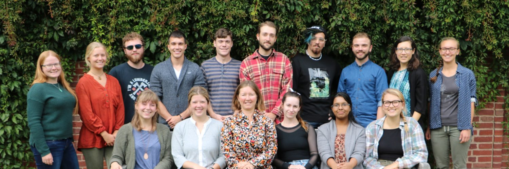

Mycology · Acadia University · Dept. Biology
Welcome to
Walker Mycology Lab.
01 / Fungal systemsCycle 01
Fungal DNA sequence
Explore our work.
Discover the questions we investigate and the research we share.
Come explore and help document this fascinating and little-known component of Canada’s biodiversity, where many discoveries await!
Meet the team ↗
